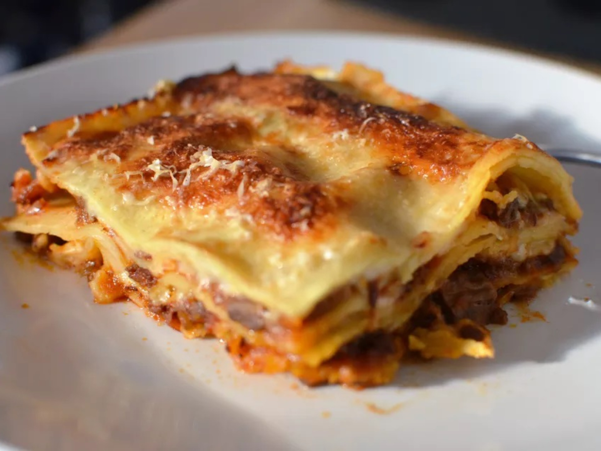

Learn how to make a lasagna worth of Garfield praise!

Description
Homemade lasagna is the best. It tastes nothing like the ones from the frozen food aisle. This recipe is so good—it makes the kind of lasagna people write home about! It brings together all of the things we love in a good pasta dish: noodles, cheeses, fresh herbs and a delicious meat sauce. If you’ve never made lasagna before or haven’t found a good recipe, you have come to the right place. Invite a friend because you won’t want to keep this dish to yourself!
Ingredients
- 2 batches (4 cups) besciamella sauce, or 2 batches Tuscan-style Ragù sauce to make a large 9x13-inch or 8x11-inch lasagne, or use just 1 batch of besciamella (2 cups) or meat sauce to make a smaller, 6x10-inch lasagne
- 1 (9-ounce box) no-boil/oven-ready lasagne noodles, or 1 pound fresh lasagne sheets, preferable
- 1 cup freshly grated Parmigiano Reggiano cheese
Steps
- Preheat the oven to 375 degrees Fahrenheit (190 degrees Celsius).
- Prepare the besciamella sauce and your meat sauce of choice according to the recipes and instructions linked above.
- Cover the bottom of your lasagna pan with a thin, even layer of besciamella sauce.
- Cover the besciamella sauce with a layer of the lasagna noodles (you may overlap them slightly to make them fit, and/or cut them so they fit).
- Cover the noodles with another thin layer of besciamella sauce, then a layer of the meat sauce, then a generous sprinkling of the grated Parmigiano-Reggiano cheese.
- Then lay down another layer of the noodles, then besciamella, meat sauce, and grated cheese, and repeat: noodles, besciamella, meat sauce, grated cheese until you reach the top of your pan. Usually this will be between 4 to 6 layers.
- Finish with a layer of meat sauce, besciamella, and another generous sprinkling of grated Parmigiano. [Note: If you are using dry, no-boil pasta, make sure that it is all completely covered with sauce or it won't cook.]
- Bake for 20 to 30 minutes, or until the top is crisp and golden brown.
- If you have any leftover ragù sauce, it freezes very well. The lasagne can be made ahead of time and kept refrigerated and reheated in the oven, or assembled and frozen uncooked, then defrosted in the refrigerator for 24 hours before cooking.
Return to top
Return to first page